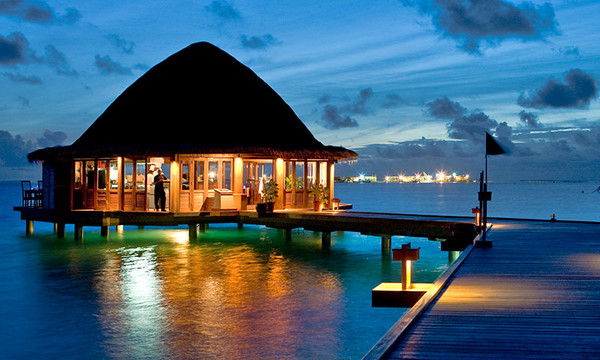
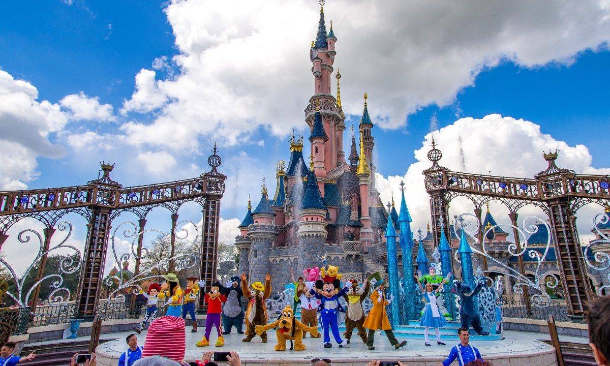

¿A dónde quieres ir?
|  | MaldivasHay miles de razones para viajar a las Maldivas: algunos dicen que es el lugar más romántico de la tierra, otros afirman que sus aguas son las más espléndidas del planeta. En cualquier caso, lo que te aseguro es que este país no te decepcionará, y es que no hay ningún otro lugar en el mundo que fascine de esta forma ir |
 |
PastoNariño es un destino que a mi parecer está tristemente subvalorado. Sí, que ya sabemos que queda lejos. Sí, que ya sabemos que comen cosas raras. Si, que ya sabemos que hablan chistoso. Pero si hay algo que nuestros queridos pastusos deben estar orgullosos es de su increíble pedacito de tierra. Y nosotros un poco avergonzados es de no conocerla.p> ir |
|  | DisneyDisney sin lugar a dudas está en el inconsciente colectivo de todos quienes nacimos y soñamos con el ratón Mickey. Ubicado en el corazón de Orlando, Estados Unidos; Disney es un resort llamado World Disney Resort, contando con miles de hectáreas que incluyen no sólo los clásicos parques de atracciones, sino también estadios (ESPN), lujosos hoteles y villas para hospedarse a distintos precios, restoranes, lagunas artificiales, tiendas para comprar (Disney Springs es un lujo), y muchas cosas más. ir |